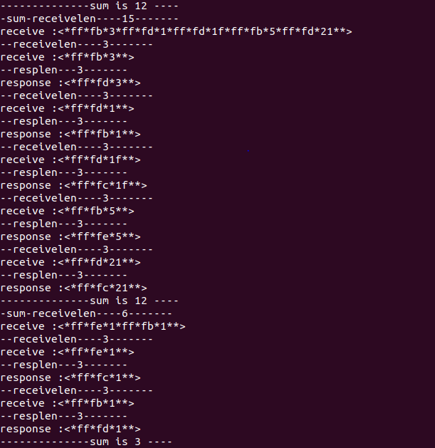

首先要了解telnet协议，一下两篇blog给了我初步的思路
https://www.cnblogs.com/liang-ling/p/5833489.html 这篇有比较基础的介绍 以及IAC命令含义解释
https://www.cnblogs.com/image-eye/archive/2012/03/28/2421726.html 这篇就很能抓住重点 另外这位博主使用的是C# 写的程序十分完整 我这里关于IAC指令处理有部分是直接借鉴他的程序 因此注释都没有修改仍然使用的是他的注释
以上两篇大致看过之后 就可以了解本次po出来的程序了 内容较为朴素
utils.h
#ifndef __UTILS__H
#define __UTILS__H
#include <unistd.h>
#include <sys/types.h>
#include <sys/socket.h>
#include <netdb.h>
#include <stdio.h>
#include <stdlib.h>
#include <string.h>
#include <ctype.h>
#include <errno.h>
#include <malloc.h>
#include <netinet/in.h>
#include <arpa/inet.h>
#include <sys/ioctl.h>
#include <stdarg.h>
#include <fcntl.h>
#include <fcntl.h>
#include <sys/poll.h>
#include <signal.h>
#include <sys/wait.h>
typedef signed long int ssize_t;
typedef unsigned long int size_t;
ssize_t readn(int fd, void *vptr,size_t n);
ssize_t writen(int fd, const void *vptr, size_t n);
ssize_t readline(int fd,void *vptr,size_t maxlen);
#endif
utils.c
#include"utils.h"
ssize_t readn(int fd, void *vptr,size_t n)
{
size_t nleft;
ssize_t nread;
char *ptr;
ptr = vptr;
nleft = n;
while(nleft >0)
{
if((nread = read(fd,ptr,nleft))<0)
{
if(errno == EINTR)//error：为EAGAIN，表示在非阻塞下，此时无数据到达，立即返回。
nread = 0; //error：为EINTR，表示被信号中断了。
else
return (-1);
}
else if(nread == 0)
break;
else
/* do nothing */
nleft -= nread;
ptr += nread;
}
return n-nleft;//实际读了多少字节
}
ssize_t writen(int fd, const void *vptr, size_t n)
{
size_t nleft;
ssize_t nwritten;
const char *ptr;
ptr = vptr;
nleft = n;
while(nleft > 0)
{
if((nwritten = write(fd,ptr,nleft)) < 0)
{
if(nwritten <0 && errno == EINTR)
{
nwritten = 0;
}
else
return (-1);
}
else if(nwritten == 0)
break;
else //nwritten > 0
{
/*do nothing*/
}
nleft = nleft - nwritten;
ptr = ptr + nwritten;
}
return (n- nleft);//实际写了多少字节
}
ssize_t readline(int fd,void *vptr,size_t maxlen)
{
ssize_t n =0,rc;
char c,*ptr;
ptr = vptr;
while(1)
{
if((rc = read(fd,&c,1)) == 1)
{
*ptr++ = c;
n++;
if(c == '\n')
break;
}
else if (rc == 0)
{
*ptr = '\0';
return (n -1);
}
else
{
if(errno == EINTR)
continue;
else
return (-1);
}
}
*ptr = '\0';
return n;
}
telnet.h
#ifndef __TELNET__H
#define __TELNET__H
//<IAC CMD OP >
#define IAC 255
//command word
#define NUL 0
#define BEL 7
#define BS 8
#define HT 9
#define LF 10
#define VT 11
#define FF 12
#define CR 13
#define SE 240
#define NOP 241
#define DM 242
#define BRK 243
#define IP 244
#define AO 245
#define AYT 246
#define EC 247
#define EL 248
#define GA 249
#define SB 250
#define WILL 251
#define WONT 252
#define DO 253
#define DONT 254
typedef unsigned char uint8;
typedef unsigned int uint32;
//operation options
typedef enum tagOPERATION_OPTIONS
{
TOPT_BIN = 0,
TOPT_ECHO = 1,
TOPT_RECN = 2,
TOPT_SUPP = 3
}OPERATION_OPTIONS;
uint32 get_every_frame(uint8* recvbuf,uint32 len,uint8* sendbuf,uint32 sendlen);
#endif
telnet.c
#include"telnet.h"
#include<string.h>
#include<stdio.h>
#define MAXLINE 1024
#define SEND 1
#define IS 0
static uint32 handle_telnetcmd_from_server(uint8* buf,uint32 len,uint8* resp,uint32 n);
static uint32 process_every_frame(uint8* startByte,uint8* endByte,uint8* sendbuf,uint32 startSendByte);
uint32 get_every_frame(uint8* recvbuf,uint32 len,uint8* sendbuf,uint32 sendlen)
{
uint32 i =0,n=0,sum =0;
//uint8* p = sendbuf;
uint8* pRear = &recvbuf[len];
uint8* startByte = recvbuf;
uint8* endByte = recvbuf;
printf("-sum-receivelen----%d-------\n",len);
printf("receive :<*");
for(i =0 ;i<len;i++)
{
printf("%x*",recvbuf[i]);
}
printf("*>\n");
while(startByte != pRear)
{
if(*startByte == IAC)
{
sum = sum + n;
switch(*(++endByte))
{
/*fa 250 */case SB:while(*(++endByte) != SE){};n = process_every_frame(startByte,endByte,sendbuf,sum);break;
/*fb 251 */case WILL:endByte +=2;n = process_every_frame(startByte,endByte,sendbuf,sum);break;
/*fc 252 */case WONT:endByte +=2;n = process_every_frame(startByte,endByte,sendbuf,sum);break;
/*fd 253 */case DO:endByte +=2;n = process_every_frame(startByte,endByte,sendbuf,sum);break;
/*fe 254 */case DONT:endByte +=2;n = process_every_frame(startByte,endByte,sendbuf,sum);break;
/* 240 */case SE:break;
/* sss */default : break;
}
}
startByte = endByte;
}
if(sum > sendlen)
{
printf("--error3---sum > MAXLINE-----\n");
}
printf("--------------sum is %d ----\n",sum);
return sum;
}
static uint32 process_every_frame(uint8* startByte,uint8* endByte,uint8* sendbuf,uint32 startSendByte)
{
uint8 n = 0 ;
uint8* pstartByte = startByte;
while(pstartByte != endByte)
{
n++;
pstartByte++;
}
return handle_telnetcmd_from_server(startByte,n,&sendbuf[startSendByte],MAXLINE);
}
static uint32 handle_telnetcmd_from_server(uint8* buf,uint32 len,uint8* resp,uint32 n)
{
uint32 i =0;
uint8 *p = resp;
OPERATION_OPTIONS optionCode;
uint8 cmdCode,ch;
uint32 resplen =0;
memset(resp,0,len);
//first display cmd from server in string
printf("--receivelen----%d-------\n",len);
printf("receive :<*");
for(i =0 ;i<len;i++)
{
printf("%x*",buf[i]);
}
printf("*>\n");
if(len < 3)
{
printf("IAC command length is %d less then 3\n",len);
return -1;
}
//获得命令码
cmdCode = buf[1];
//获得选项码
optionCode = buf[2];
//response requests from server
*p = IAC;
resplen++;
if(optionCode == TOPT_ECHO || optionCode == TOPT_SUPP)
{
if (cmdCode == DO)
{
//我设置我应答的命令码为 251(WILL) 即为支持 回显或抑制继续进行
ch = WILL;
*(++p) = ch;
*(++p)= optionCode;
resplen += 2;
}
//如果命令码为 254(DONT)
else if (cmdCode == DONT)
{
//我设置我应答的命令码为 252(WONT) 即为我也会"拒绝启动" 回显或抑制继续进行
ch = WONT;
*(++p)= ch;
*(++p)= optionCode;
resplen += 2;
}
//如果命令码为251(WILL)
else if (cmdCode == WILL)
{
//我设置我应答的命令码为 253(DO) 即为我认可你使用回显或抑制继续进行
ch = DO;
*(++p)= ch;
*(++p)= optionCode;
resplen += 2;
//break;
}
//如果接受到的命令码为251(WONT)
else if (cmdCode == WONT)
{
//应答 我也拒绝选项请求回显或抑制继续进行
ch = DONT;
*(++p)= ch;
*(++p)= optionCode;
resplen += 2;
// break;
}
//如果接受到250(sb,标志子选项开始)
else if (cmdCode == SB)
{
/*
* 因为启动了子标志位,命令长度扩展到了4字节,
* 取最后一个标志字节为选项码
* 如果这个选项码字节为1(send)
* 则回发为 250(SB子选项开始) + 获取的第二个字节 + 0(is) + 255(标志位IAC) + 240(SE子选项结束)
*/
ch = buf[3];
if (ch == SEND)
{
ch = SB;
*(++p)= ch;
*(++p)= optionCode;
*(++p)= IS;
*(++p)= IAC;
*(++p)= SE;
resplen += 5;
}
else
{
printf("ch != SEND\n");
}
}
else
{
/* do nothing */
}
}
else/* 如果选项码不是1 或者3 */
{
// 底下一系列代表,无论你发那种请求,我都不干
if (cmdCode == DO)
{
ch = WONT;
*(++p)= ch;
*(++p)= optionCode;
resplen += 2;
}
else if (cmdCode == DONT)
{
ch = WONT;
*(++p)= ch;
*(++p)= optionCode;
resplen += 2;
}
else if (cmdCode == WILL)
{
ch = DONT;
*(++p)= ch;
*(++p)= optionCode;
resplen += 2;
}
else if (cmdCode == WONT)
{
ch = DONT;
*(++p)= ch;
*(++p)= optionCode;
resplen += 2;
}
else
{
/* do nothing */
}
}
printf("--resplen---%d-------\n",resplen);
printf("response :<*");
for(i =0 ;i<resplen;i++)
{
printf("%x*",resp[i]);
}
printf("*>\n");
if(n < resplen )
{
printf("error n < resplen !!! \n");
}
if(resplen < 3 )
{
printf("resplen < 3 \n");
}
return resplen;
}
client.c
//gcc client.c -o client
#include"utils.h"
#include"telnet.h"
#define IP_ADDRESS "127.0.0.1"
#define IP_PORT 23
#define SERV_PORT 3333
#define MAXLINE 1024
typedef struct sockaddr SA;
void str_cli(FILE *fp,uint32 sockfd);
uint32 max(uint32 a,uint32 b);
void ERR_EXIT(char* s);
uint32 main(uint32 argc,uint32 **argv)
{
uint32 sockfd,isReady=0;
struct sockaddr_in servaddr;
uint32 hname[128];
sockfd = socket(AF_INET,SOCK_STREAM,0);
bzero(&servaddr,sizeof(servaddr));
servaddr.sin_family = AF_INET;
servaddr.sin_port = htons(IP_PORT);
servaddr.sin_addr.s_addr = inet_addr(IP_ADDRESS);
printf("servaddr: IP is %s, Port is %d\n",inet_ntoa(servaddr.sin_addr), ntohs(servaddr.sin_port));
while(connect(sockfd,(SA*)&servaddr,sizeof(servaddr))){};
printf("connect has been ready\n");
str_cli(stdin,sockfd);
exit(0);
return 0;
}
void ERR_EXIT(char* s)
{
perror(s);
exit(EXIT_FAILURE);
}
void INFO_PRINT(char* s)
{
printf("%s",s);
}
uint32 max(uint32 a,uint32 b)
{
return (a>b?a:b);
}
void str_cli(FILE *fp,uint32 sockfd)
{
uint32 maxfdp1,nready;//stdineof;
fd_set rset;
uint8 buf[MAXLINE];
uint8 respbuff[MAXLINE] = {0};;
uint32 resplen;
uint32 n;
uint8 echo_cmd[] = {0xff,0xfb,0x01};
//stdineof = 0;
FD_ZERO(&rset);
writen(sockfd,echo_cmd,3);
for(;;)
{
//if(stdineof == 0)
FD_SET(fileno(fp),&rset);
FD_SET(sockfd,&rset);
maxfdp1 = max(fileno(fp),sockfd)+1;
nready = select(maxfdp1,&rset,NULL,NULL,NULL);
if(nready < 0)
{
ERR_EXIT("ERROR!!!!!!!!!!!!!!!!!!!!!!!!!!!!!!!!!");
}
if(FD_ISSET(sockfd,&rset))
{
memset(buf,0,MAXLINE);
if((n = read(sockfd,buf,MAXLINE))==0)
{
ERR_EXIT("str_cli:server termination prematurely");
}
buf[n] = '\0';
//printf("FD_ISSET(sockfd,&rset)-------------%s\n",buf);
if(buf[0] == IAC)
{
memset(respbuff,0,MAXLINE);
resplen = get_every_frame(buf,n,respbuff,MAXLINE);
writen(sockfd,respbuff,resplen);
}
else
{
writen(fileno(stdout),(char *)buf,n);
}
//writen(fileno(stdout),buf,n);
}
if(FD_ISSET(fileno(fp),&rset))
{
memset(buf,0,MAXLINE);
if((n = readline(fileno(fp),(char *)buf,MAXLINE)) == 0)
{
//stdineof = 1;//此时碰到EOF 并且马上要发生FIN序列 所以标准输入不可读了
shutdown(sockfd,SHUT_WR);
FD_CLR(fileno(fp),&rset);
INFO_PRINT("nothing input!");
continue;
}
else if(n >0)
{
/* do nothing */
}
else
{
ERR_EXIT("some error occurred ");
}
//printf("FD_ISSET(fileno(fp),&rset)----%d--\n",n);
//memset(buf,0,MAXLINE);
writen(sockfd,(char *)buf,n);
}
}
}makefile
all:Client_telnet
@echo ""
@echo "This is telnet Client compile......."
@echo ""
Client_telnet:client.o utils.o telnet.o
gcc -g -o Client_telnet client.o utils.o telnet.o
client.o:client.c utils.h telnet.h
gcc -g -c client.c
utils.o:utils.c utils.h
gcc -g -c utils.c
telnet.o:telnet.c telnet.h
gcc -g -c telnet.c
clean :
-rm client.o utils.o telnet.o Client_telnet以上为本次程序使用的源码 程序在Linux系统上运行方式为 ./Client_telnet
然后是运行截图如此下：

以上